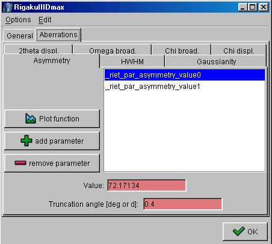

Building the analysis file (step 1)
- Start the Maud program or, if you are already in, choose 'New' from the 'File' menu to
start a new analysis and reset all.
- Give a title to the analysis and put your name in the "Operator" field.
- Select the Instruments tabPanel. If present, remove any instrument by selecting the
instrument in the list and pressing the 'Remove' button.
- Press the 'Add from database' button to load the database from the file
"Instruments.mdb" in the "files" folder of Maud. A window will appear
allowing you to select the desired instrument. Choose the
"RIGAKUIIIDmax"instrument, the one we are going to use in this tutorial.
- Be sure the instrument is selected and press the 'Edit' button to view and/or modify the
characteristics. A window will appear containing all the informations for that instrument,
divided into two tabPanels: "General" ad "Aberrations". Select the
tabPanel "Aberrations".

Aberrations tabPanel
All these parameters but the 2Theta displacement are fixed for the instrument selected. Go
to the "2theta displ." tabPanel. Click on the parameter and reset its value to
zero. This corresponds to have a starting zero shift in the spectrum which will be later
refined (the error is in d-spacing if the spectrum is in d-spacing).
- Click on the 'OK'button to exit the "Instruments" edit frame.